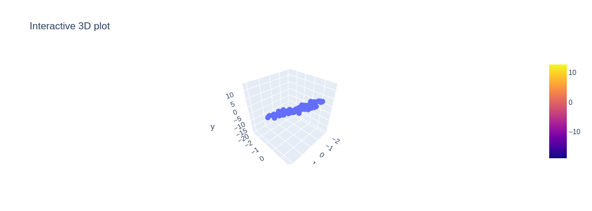
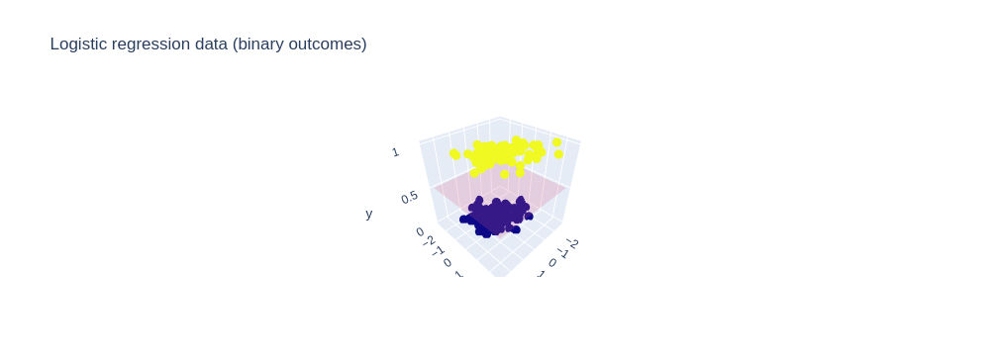

import numpy as np
import matplotlib.pyplot as plt
N = 100
d = 3
w_true = np.array([-1.0,2.0,5.0])
sigma = 1.0
# model is actually agnostic to how we build X
X = np.random.randn(N, d-1)
X = np.hstack([np.ones((N, 1)), X])
s = X @ w_true
y = np.random.normal(loc=s,scale=sigma)7 ERM, Maximum Likelihood, KL, and Cross Entropy
7.1 Modeling \((x, y)\)
We observe data \(\{(x_n, y_n)\}_{n=1}^N\). A standard modeling assumption is that the samples are independent from \(p\) where
\[ p_\theta(x, y) = p_\theta(y \mid x)\, p(x) \]
Here:
- \(p_\theta(y \mid x)\) is the model we want to learn
- \(p(x)\) does not depend on \(\theta\)
This separation implies that learning \(\theta\) depends only on the conditional distribution of \(y\mid x\).
7.2 Maximum Likelihood Estimation
How should we estimate \(\theta\)? We can do it with Maximum Likelihood Estimation (MLE). MLE chooses parameters to maximize the probability of the observed data:
\[ \hat{\theta} = \arg\max_\theta p_\theta(x_1,\ldots,x_N,y_1,\ldots, y_N) \]
For our model, we can simplify things. Using independence:
\[ = \arg\max_\theta \prod_{n=1}^N p_\theta(x_n, y_n) = \arg\max_\theta \prod_{n=1}^N p_\theta(y_n \mid x_n)\, p(x_n) \]
Since \(p(x_n)\) does not depend on \(\theta\), it can be removed:
\[ = \arg\max_\theta \prod_{n=1}^N p_\theta(y_n \mid x_n) \]
Taking logs:
\[ = \arg\max_\theta \sum_{n=1}^N \log p_\theta(y_n \mid x_n) \]
7.3 Argmax and Monotone Transformations
A key technical tool used above is that certain transformations do not change the optimizer.
If \(h\) is a strictly increasing function, then for any objective \(g(\theta)\):
\[ \arg\max_\theta h(g(\theta)) = \arg\max_\theta g(\theta) \]
and similarly:
\[ \arg\min_\theta h(g(\theta)) = \arg\min_\theta g(\theta) \]
The intuition is that an increasing function preserves ordering. If \(g(\theta_1) > g(\theta_2)\), then \(h(g(\theta_1)) > h(g(\theta_2))\), so the maximizer does not change.
This justifies taking logs of the likelihood:
\[ \arg\max_\theta \prod_{n=1}^N p_\theta(y_n \mid x_n) = \arg\max_\theta \sum_{n=1}^N \log p_\theta(y_n \mid x_n) \]
because the logarithm is strictly increasing.
Now consider a strictly decreasing function \(h\). Then the ordering reverses:
\[ g(\theta_1) > g(\theta_2) \;\Rightarrow\; h(g(\theta_1)) < h(g(\theta_2)) \]
So:
\[ \arg\max_\theta g(\theta)= \arg\min_\theta h(g(\theta)) \]
A simple example is multiplication by \(-1\), which is strictly decreasing:
\[ \arg\max_\theta g(\theta)= \arg\min_\theta -g(\theta) \]
7.4 From MLE to ERM
Using the above discussion, we rewrite the objective:
\[ \arg\max_\theta \sum_{n=1}^N \log p_\theta(y_n \mid x_n) = \arg\min_\theta \frac{1}{N} \sum_{n=1}^N -\log p_\theta(y_n \mid x_n) \]
This is ERM:
\[ \arg\min_\theta \frac{1}{N} \sum_{n=1}^N \ell(y_n, s_\theta(x_n)) \]
where:
\[ \ell(y, s_\theta(x)) = -\log p_\theta(y \mid x) \]
The function \(s_\theta(x)\) is the model’s score (e.g., \(w^\top x\)), and the loss is derived from the likelihood.
7.5 Linear Regression (Gaussian Model)
Assume a Gaussian conditional model:
\[ y_n \mid x_n \sim \mathcal{N}(w^\top x_n, \sigma^2) \]
This says:
- The mean is \(w^\top x_n\)
- The noise is Gaussian with variance \(\sigma^2\)
The conditional density is:
\[ p_w(y_n \mid x_n) = \frac{1}{\sqrt{2\pi\sigma^2}} \exp\left(-\frac{1}{2\sigma^2}(y_n - w^\top x_n)^2\right) \]
Take the negative log:
\[ -\log p_w(y_n \mid x_n) = \frac{1}{2\sigma^2}(y_n - w^\top x_n)^2 + \text{const} \]
The constant does not depend on \(w\), so it does not affect the optimizer.
Define:
\[ s_w(x_n) = w^\top x_n \]
and the squared error loss:
\[ \ell(y_n, s_w(x_n)) = (y_n - s_w(x_n))^2 \]
Then ERM becomes:
\[ \arg\min_w \frac{1}{N} \sum_{n=1}^N (y_n - w^\top x_n)^2 \]
So squared error loss arises directly from the Gaussian likelihood.
One nice use of all of this is that we can use it generate simulated data. For example:
import plotly.graph_objects as go
import numpy as np
x2 = X[:, 1]
x3 = X[:, 2]
fig = go.Figure()
# Scatter points
fig.add_trace(go.Scatter3d(
x=x2,
y=x3,
z=y,
mode='markers',
marker=dict(size=3)
))
# Add plane
x2_grid, x3_grid = np.meshgrid(
np.linspace(x2.min(), x2.max(), 20),
np.linspace(x3.min(), x3.max(), 20)
)
y_plane = (
w_true[0]
+ w_true[1] * x2_grid
+ w_true[2] * x3_grid
)
fig.add_trace(go.Surface(
x=x2_grid,
y=x3_grid,
z=y_plane,
opacity=0.5
))
fig.update_layout(
scene=dict(
xaxis_title='x2',
yaxis_title='x3',
zaxis_title='y'
),
title='Interactive 3D plot'
)
fig.show()
7.6 Logistic Regression (Bernoulli Model)
Assume a Bernoulli conditional model:
\[ y_n \mid x_n \sim \text{Bernoulli}(p_n) \]
with:
\[ p_n = \sigma(w^\top x_n), \quad \sigma(z) = \frac{1}{1 + e^{-z}} \]
So:
\[ P(y_n = 1 \mid x_n) = \sigma(w^\top x_n) \]
Equivalently:
\[ y_n \mid x_n \sim \text{Bernoulli}(\sigma(w^\top x_n)) \]
The Bernoulli likelihood can be written as:
\[ p_w(y_n \mid x_n) = \sigma(w^\top x_n)^{y_n} (1 - \sigma(w^\top x_n))^{1 - y_n} \]
Take the negative log:
\[ -\log p_w(y_n \mid x_n) = -\Big[ y_n \log \sigma(w^\top x_n) + (1 - y_n)\log(1 - \sigma(w^\top x_n)) \Big] \]
Again, this is just ERM under the correct choices.
Define:
\[ s_w(x_n) = w^\top x_n \]
and:
\[ \ell(y, s) = -\big(y \log \sigma(s) + (1-y)\log(1-\sigma(s))\big) \]
Then ERM becomes:
\[ \arg\min_w \frac{1}{N} \sum_{n=1}^N \ell(y_n, w^\top x_n) \]
This is the cross-entropy loss, derived directly from the Bernoulli likelihood.
import numpy as np
import plotly.graph_objects as go
N = 200
d = 3
w_true = np.array([-1.0, 2.0, 5.0])
X = np.random.randn(N, d-1)
X = np.hstack([np.ones((N, 1)), X])
def sigmoid(z):
return 1 / (1 + np.exp(-z))
s = X @ w_true
p = sigmoid(s)
y = np.random.binomial(1, p)y[:10]array([0, 0, 0, 1, 0, 0, 0, 1, 1, 1])x2 = X[:, 1]
x3 = X[:, 2]
fig = go.Figure()
# Scatter points (colored by class)
fig.add_trace(go.Scatter3d(
x=x2,
y=x3,
z=y,
mode='markers',
marker=dict(size=3, color=y)
))
# Optional: decision surface (probability = 0.5)
x2_grid, x3_grid = np.meshgrid(
np.linspace(x2.min(), x2.max(), 30),
np.linspace(x3.min(), x3.max(), 30)
)
# Solve for z = 0 plane (where p = 0.5)
z_plane = (
-w_true[0]
- w_true[1] * x2_grid
- w_true[2] * x3_grid
) / 1e-6
y_plane = np.zeros_like(x2_grid) #z=0.5
fig.add_trace(go.Surface(
x=x2_grid,
y=x3_grid,
z=0.5 * np.ones_like(x2_grid),
opacity=0.2,
showscale=False
))
fig.update_layout(
scene=dict(
xaxis_title='x2',
yaxis_title='x3',
zaxis_title='y'
),
title='Logistic regression data (binary outcomes)'
)
fig.show()
8 KL Divergence
The Kullback–Leibler (KL) divergence between two distributions \(p\) and \(q\) over a random variable \(Y\) is:
\[ \mathrm{KL}(p \,\|\, q) = \mathbb{E}_{Y \sim p} \left[ \log \frac{p(Y)}{q(Y)} \right] \]
It has the following properties:
- \(\mathrm{KL}(p \| q) \ge 0\)
- \(\mathrm{KL}(p \| q) = 0\) if and only if \(p = q\)
- It is not symmetric
It measures how well \(q\) approximates \(p\). It is not a true distance since it is not symmetric, so we call it a divergence.
A useful way to understand KL divergence is to rewrite it:
\[ \mathrm{KL}(p \,\|\, q) = \mathbb{E}_{Y \sim p}\left[\log \frac{p(Y)}{q(Y)}\right] = \mathbb{E}_{Y \sim p}[\log p(Y)] - \mathbb{E}_{Y \sim p}[\log q(Y)] \]
Now introduce two standard quantities:
- Entropy: \[ H(p) = \mathbb{E}_{Y \sim p}[-\log p(Y)] \]
- Cross-entropy: \[ H(p, q) = \mathbb{E}_{Y \sim p}[-\log q(Y)] \]
Using these, we can rewrite KL divergence as:
\[ \mathrm{KL}(p \| q) = H(p, q) - H(p) \]
This decomposition is central.
- \(H(p)\) measures the inherent uncertainty in the true distribution of \(Y\)
- \(H(p, q)\) measures how well the model \(q\) predicts outcomes drawn from \(p\)
So KL divergence is:
The gap between how well you could do (using \(p\)) and how well you actually do (using \(q\)).
import numpy as np
import matplotlib.pyplot as plt
import ipywidgets as widgets
from ipywidgets import interact
def plot_bernoulli_kl(p=0.7):
q_grid = np.linspace(0.001, 0.999, 500)
H_p = -p * np.log(p) - (1 - p) * np.log(1 - p)
H_pq = -p * np.log(q_grid) - (1 - p) * np.log(1 - q_grid)
KL = H_pq - H_p
plt.figure(figsize=(8, 5))
plt.plot(q_grid, H_pq, label='Cross-entropy H(p,q)')
plt.plot(q_grid, KL, label='KL(p||q)')
plt.axhline(H_p, linestyle='--', label='Entropy H(p)')
plt.axvline(p, linestyle='--', label=f'p = {p:.2f}')
plt.xlabel('Model probability q')
plt.ylabel('Value')
plt.title(f'Bernoulli case with true parameter p = {p:.2f}')
plt.legend()
plt.show()
interact(
plot_bernoulli_kl,
p=widgets.FloatSlider(
value=0.7,
min=0.01,
max=0.99,
step=0.01,
description='p'
)
)<function __main__.plot_bernoulli_kl(p=0.7)>8.1 Surprisal
Another way to understand this is through the notion of surprise.
For a single outcome \(Y\), define:
\[ \text{surprise under } q = -\log q(Y) \]
- If \(q(Y)\) is large → low surprise
- If \(q(Y)\) is small → high surprise
The logarithm is used because it is essentially the only choice (up to scaling) that behaves correctly for information.
- It makes independent events add:
\[ -\log(q(y_1)q(y_2)) = -\log q(y_1) - \log q(y_2) \] - It assigns larger values to rarer events and goes to infinity as probability goes to zero
- Some other nice theoretical properties
Given this definition,
\[ H(p, q) = \mathbb{E}_{Y \sim p}[-\log q(Y)] \]
is the average surprise when outcomes are generated from \(p\) but evaluated using \(q\).
Similarly:
\[ H(p) = \mathbb{E}_{Y \sim p}[-\log p(Y)] \]
is the minimum possible average surprise, achieved when using the true distribution.
Putting this together:
\[ \mathrm{KL}(p \| q) = H(p, q) - H(p) \]
So KL divergence measures:
The extra average surprise incurred by using \(q\) instead of the true distribution \(p\).
This explains both key properties:
- KL is always nonnegative because you cannot do better than the true distribution
- KL is zero only when \(q = p\)
KL divergence also strongly penalizes assigning low probability to outcomes that actually occur.
If there exists a value \(y\) such that: - \(p(y) > 0\) - \(q(y) \approx 0\)
then:
\[ \log \frac{p(y)}{q(y)} \] is very large and consequently so is KL.
8.2 Connection to ERM and MLE
ERM/MLE solves:
\[ \arg\min_\theta \; \frac{1}{N} \sum_{n=1}^N -\log p_\theta(y_n \mid x_n) \]
This approximates the population version:
\[ \arg\min_\theta \; \mathbb{E}_{(X,Y)\sim p}[-\log p_\theta(Y \mid X)] \]
To understand what this objective is doing, fix a value of \(X = x\). Then consider:
\[ \mathbb{E}_{Y \sim p(\cdot \mid x)}[-\log p_\theta(Y \mid x)] \]
This quantity is exactly the cross-entropy between the true conditional distribution \(p(\cdot \mid x)\) and the model \(p_\theta(\cdot \mid x)\):
\[ H\big(p(\cdot \mid x),\; p_\theta(\cdot \mid x)\big) \]
Recall that cross-entropy is defined as:
\[ H(p, q) = \mathbb{E}_{Y \sim p}[-\log q(Y)] \]
So here, we are measuring the average log-loss (or surprise) when:
- data is generated from the true distribution \(p(\cdot \mid x)\)
- but evaluated using the model \(p_\theta(\cdot \mid x)\)
In other words:
Minimizing log-loss is exactly the same as minimizing cross-entropy.
Now use the decomposition:
\[ H(p, q) = H(p) + \mathrm{KL}(p \| q) \]
to rewrite:
\[ \mathbb{E}_{Y \sim p(\cdot \mid x)}[-\log p_\theta(Y \mid x)] = H\big(p(\cdot \mid x)\big) + \mathrm{KL}\big(p(\cdot \mid x)\,\|\,p_\theta(\cdot \mid x)\big) \]
Taking expectation over \(X\):
\[ \mathbb{E}_{(X,Y)}[-\log p_\theta(Y \mid X)] = \mathbb{E}_X\big[H(p(\cdot \mid X))\big] + \mathbb{E}_X\Big[ \mathrm{KL}\big(p(\cdot \mid X)\,\|\,p_\theta(\cdot \mid X)\big) \Big] \]
The entropy term:
\[ \mathbb{E}_X\big[H(p(\cdot \mid X))\big] \]
does not depend on \(\theta\), so it can be ignored for optimization.
Therefore, minimizing the population objective is equivalent to:
\[ \min_\theta \; \mathbb{E}_X\Big[ \mathrm{KL}\big(p(\cdot \mid X)\,\|\,p_\theta(\cdot \mid X)\big) \Big] \]
This gives three equivalent interpretations of the same procedure:
- Minimizing log-loss (ERM)
- Minimizing cross-entropy
- Minimizing KL divergence
Conceptually:
- Log-loss is the pointwise quantity
- Cross-entropy is its expectation under the data distribution
- KL divergence is the excess over the best possible value
So learning can be viewed either as minimizing cross-entropy directly, or as minimizing KL divergence to match the true conditional distribution.
import numpy as np
import matplotlib.pyplot as plt
import ipywidgets as widgets
from ipywidgets import interact
# Reference distribution
mu_ref = np.random.normal(1)
sigma_ref = np.abs(np.random.normal(1))
def normal_pdf(x, mu, sigma):
return (1.0 / (np.sqrt(2 * np.pi) * sigma)) * np.exp(-0.5 * ((x - mu) / sigma) ** 2)
def kl_gaussian(mu_p, sigma_p, mu_q, sigma_q):
# KL(N(mu_p, sigma_p^2) || N(mu_q, sigma_q^2))
return np.log(sigma_q / sigma_p) + (
sigma_p**2 + (mu_p - mu_q)**2
) / (2 * sigma_q**2) - 0.5
def plot_normals(mu=1.0, sigma=1.5):
x_min = min(mu_ref - 4 * sigma_ref, mu - 4 * sigma) - 1
x_max = max(mu_ref + 4 * sigma_ref, mu + 4 * sigma) + 1
x = np.linspace(x_min, x_max, 1000)
p = normal_pdf(x, mu_ref, sigma_ref)
q = normal_pdf(x, mu, sigma)
kl_pq = kl_gaussian(mu_ref, sigma_ref, mu, sigma)
kl_qp = kl_gaussian(mu, sigma, mu_ref, sigma_ref)
plt.figure(figsize=(8, 5))
#plt.plot(x, p, label=fr"Reference $N({mu_ref:.2f}, {sigma_ref:.2f})$")
plt.plot(x, p, label=fr"Reference")
plt.plot(x, q, label=fr"Model $N({mu:.2f}, {sigma:.2f})$")
plt.xlabel("x")
plt.ylabel("density")
plt.title("Two Normal Densities")
plt.legend()
plt.grid(alpha=0.25)
plt.show()
print(f"KL(reference || model) = {kl_pq:.6f}")
print(f"KL(model || reference) = {kl_qp:.6f}")
interact(
plot_normals,
mu=widgets.FloatSlider(
value=1.0,
min=-4.0,
max=4.0,
step=0.01,
description='mu'
),
sigma=widgets.FloatSlider(
value=1.5,
min=0.2,
max=4.0,
step=0.01,
description='sigma'
)
)<function __main__.plot_normals(mu=1.0, sigma=1.5)>